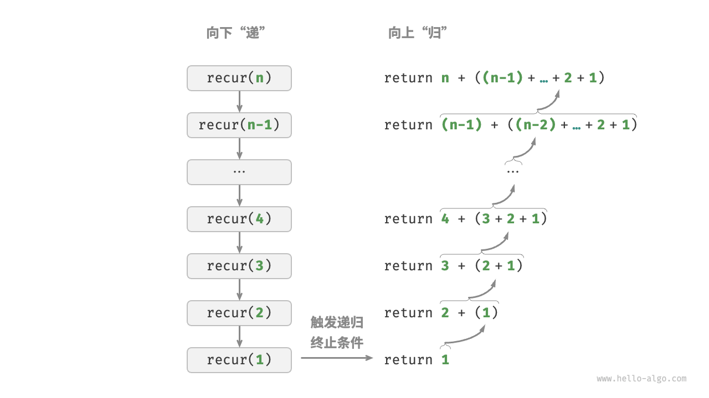

迭代与递归
在算法中，重复执行某个任务是很常见的，它与复杂度分析息息相关。因此，在介绍时间复杂度和空间复杂度之前，我们先来了解如何在程序中实现重复执行任务，即两种基本的程序控制结构：迭代、递归。
迭代
「迭代 iteration」是一种重复执行某个任务的控制结构。在迭代中，程序会在满足一定的条件下重复执行某段代码，直到这个条件不再满足。
for 循环
for 循环是最常见的迭代形式之一，适合在预先知道迭代次数时使用。
以下函数基于 for 循环实现了求和 $1 + 2 + \dots + n$ ，求和结果使用变量 res 记录。需要注意的是，Python 中 range(a, b) 对应的区间是“左闭右开”的，对应的遍历范围为 $a, a + 1, \dots, b-1$ ：
"Python"
def for_loop(n: int) -> int: """for 循环""" res = 0 // 循环求和 1, 2, ..., n-1, n for i in range(1, n + 1): res += i return res"C++"
/* for 循环 */ int forLoop(int n) { int res = 0; // 循环求和 1, 2, ..., n-1, n for (int i = 1; i <= n; ++i) { res += i; } return res; }"Java"
/* for 循环 */ int forLoop(int n) { int res = 0; // 循环求和 1, 2, ..., n-1, n for (int i = 1; i <= n; i++) { res += i; } return res; }
下图是该求和函数的流程框图。

此求和函数的操作数量与输入数据大小 $n$ 成正比，或者说成“线性关系”。实际上，时间复杂度描述的就是这个“线性关系”。相关内容将会在下一节中详细介绍。
while 循环
与 for 循环类似，while 循环也是一种实现迭代的方法。在 while 循环中，程序每轮都会先检查条件，如果条件为真，则继续执行，否则就结束循环。
下面我们用 while 循环来实现求和 $1 + 2 + \dots + n$ ：
"Python"
def while_loop(n: int) -> int: """while 循环""" res = 0 i = 1 // 初始化条件变量 // 循环求和 1, 2, ..., n-1, n while i <= n: res += i i += 1 // 更新条件变量 return res"C++"
/* while 循环 */ int whileLoop(int n) { int res = 0; int i = 1; // 初始化条件变量 // 循环求和 1, 2, ..., n-1, n while (i <= n) { res += i; i++; // 更新条件变量 } return res; }"Java"
/* while 循环 */ int whileLoop(int n) { int res = 0; int i = 1; // 初始化条件变量 // 循环求和 1, 2, ..., n-1, n while (i <= n) { res += i; i++; // 更新条件变量 } return res; }
while 循环比 for 循环的自由度更高。在 while 循环中，我们可以自由地设计条件变量的初始化和更新步骤。
例如在以下代码中，条件变量 $i$ 每轮进行两次更新，这种情况就不太方便用 for 循环实现：
"Python"
def while_loop_ii(n: int) -> int: """while 循环（两次更新）""" res = 0 i = 1 // 初始化条件变量 // 循环求和 1, 4, 10, ... while i <= n: res += i // 更新条件变量 i += 1 i *= 2 return res"C++"
/* while 循环（两次更新） */ int whileLoopII(int n) { int res = 0; int i = 1; // 初始化条件变量 // 循环求和 1, 4, 10, ... while (i <= n) { res += i; // 更新条件变量 i++; i *= 2; } return res; }"Java"
/* while 循环（两次更新） */ int whileLoopII(int n) { int res = 0; int i = 1; // 初始化条件变量 // 循环求和 1, 4, 10, ... while (i <= n) { res += i; // 更新条件变量 i++; i *= 2; } return res; }
总的来说，for 循环的代码更加紧凑，while 循环更加灵活，两者都可以实现迭代结构。选择使用哪一个应该根据特定问题的需求来决定。
嵌套循环
我们可以在一个循环结构内嵌套另一个循环结构，下面以 for 循环为例：
"Python"
def nested_for_loop(n: int) -> str: """双层 for 循环""" res = "" // 循环 i = 1, 2, ..., n-1, n for i in range(1, n + 1): // 循环 j = 1, 2, ..., n-1, n for j in range(1, n + 1): res += f"({i}, {j}), " return res"C++"
/* 双层 for 循环 */ string nestedForLoop(int n) { ostringstream res; // 循环 i = 1, 2, ..., n-1, n for (int i = 1; i <= n; ++i) { // 循环 j = 1, 2, ..., n-1, n for (int j = 1; j <= n; ++j) { res << "(" << i << ", " << j << "), "; } } return res.str(); }"Java"
/* 双层 for 循环 */ String nestedForLoop(int n) { StringBuilder res = new StringBuilder(); // 循环 i = 1, 2, ..., n-1, n for (int i = 1; i <= n; i++) { // 循环 j = 1, 2, ..., n-1, n for (int j = 1; j <= n; j++) { res.append("(" + i + ", " + j + "), "); } } return res.toString(); }
下图是该嵌套循环的流程框图。

在这种情况下，函数的操作数量与 $n^2$ 成正比，或者说算法运行时间和输入数据大小 $n$ 成“平方关系”。
我们可以继续添加嵌套循环，每一次嵌套都是一次“升维”，将会使时间复杂度提高至“立方关系”“四次方关系”，以此类推。
递归
「递归 recursion」是一种算法策略，通过函数调用自身来解决问题。它主要包含两个阶段。
- 递：程序不断深入地调用自身，通常传入更小或更简化的参数，直到达到“终止条件”。
- 归：触发“终止条件”后，程序从最深层的递归函数开始逐层返回，汇聚每一层的结果。
而从实现的角度看，递归代码主要包含三个要素。
- 终止条件：用于决定什么时候由“递”转“归”。
- 递归调用：对应“递”，函数调用自身，通常输入更小或更简化的参数。
- 返回结果：对应“归”，将当前递归层级的结果返回至上一层。
观察以下代码，我们只需调用函数 recur(n) ，就可以完成 $1 + 2 + \dots + n$ 的计算：
"Python"
def recur(n: int) -> int: """递归""" // 终止条件 if n == 1: return 1 // 递：递归调用 res = recur(n - 1) // 归：返回结果 return n + res"C++"
/* 递归 */ int recur(int n) { // 终止条件 if (n == 1) return 1; // 递：递归调用 int res = recur(n - 1); // 归：返回结果 return n + res; }"Java"
/* 递归 */ int recur(int n) { // 终止条件 if (n == 1) return 1; // 递：递归调用 int res = recur(n - 1); // 归：返回结果 return n + res; }
下图展示了该函数的递归过程。

虽然从计算角度看，迭代与递归可以得到相同的结果，但它们代表了两种完全不同的思考和解决问题的范式。
- 迭代：“自下而上”地解决问题。从最基础的步骤开始，然后不断重复或累加这些步骤，直到任务完成。
- 递归：“自上而下”地解决问题。将原问题分解为更小的子问题，这些子问题和原问题具有相同的形式。接下来将子问题继续分解为更小的子问题，直到基本情况时停止（基本情况的解是已知的）。
以上述求和函数为例，设问题 $f(n) = 1 + 2 + \dots + n$ 。
- 迭代：在循环中模拟求和过程，从 $1$ 遍历到 $n$ ，每轮执行求和操作，即可求得 $f(n)$ 。
- 递归：将问题分解为子问题 $f(n) = n + f(n-1)$ ，不断（递归地）分解下去，直至基本情况 $f(1) = 1$ 时终止。
调用栈
递归函数每次调用自身时，系统都会为新开启的函数分配内存，以存储局部变量、调用地址和其他信息等。这将导致两方面的结果。
- 函数的上下文数据都存储在称为“栈帧空间”的内存区域中，直至函数返回后才会被释放。因此，递归通常比迭代更加耗费内存空间。
- 递归调用函数会产生额外的开销。因此递归通常比循环的时间效率更低。
如下图所示，在触发终止条件前，同时存在 $n$ 个未返回的递归函数，递归深度为 $n$ 。

在实际中，编程语言允许的递归深度通常是有限的，过深的递归可能导致栈溢出错误。
尾递归
有趣的是，如果函数在返回前的最后一步才进行递归调用，则该函数可以被编译器或解释器优化，使其在空间效率上与迭代相当。这种情况被称为「尾递归 tail recursion」。
- 普通递归：当函数返回到上一层级的函数后，需要继续执行代码，因此系统需要保存上一层调用的上下文。
- 尾递归：递归调用是函数返回前的最后一个操作，这意味着函数返回到上一层级后，无须继续执行其他操作，因此系统无须保存上一层函数的上下文。
以计算 $1 + 2 + \dots + n$ 为例，我们可以将结果变量 res 设为函数参数，从而实现尾递归：
"Python"
def tail_recur(n, res): """尾递归""" // 终止条件 if n == 0: return res // 尾递归调用 return tail_recur(n - 1, res + n)"C++"
/* 尾递归 */ int tailRecur(int n, int res) { // 终止条件 if (n == 0) return res; // 尾递归调用 return tailRecur(n - 1, res + n); }"Java"
/* 尾递归 */ int tailRecur(int n, int res) { // 终止条件 if (n == 0) return res; // 尾递归调用 return tailRecur(n - 1, res + n); }
尾递归的执行过程如下图所示。对比普通递归和尾递归，两者的求和操作的执行点是不同的。
- 普通递归：求和操作是在“归”的过程中执行的，每层返回后都要再执行一次求和操作。
- 尾递归：求和操作是在“递”的过程中执行的，“归”的过程只需层层返回。

!!! tip
请注意，许多编译器或解释器并不支持尾递归优化。例如，Python 默认不支持尾递归优化，因此即使函数是尾递归形式，仍然可能会遇到栈溢出问题。
递归树
当处理与“分治”相关的算法问题时，递归往往比迭代的思路更加直观、代码更加易读。以“斐波那契数列”为例。
!!! question
给定一个斐波那契数列 $0, 1, 1, 2, 3, 5, 8, 13, \dots$ ，求该数列的第 $n$ 个数字。
设斐波那契数列的第 $n$ 个数字为 $f(n)$ ，易得两个结论。
- 数列的前两个数字为 $f(1) = 0$ 和 $f(2) = 1$ 。
- 数列中的每个数字是前两个数字的和，即 $f(n) = f(n - 1) + f(n - 2)$ 。
按照递推关系进行递归调用，将前两个数字作为终止条件，便可写出递归代码。调用 fib(n) 即可得到斐波那契数列的第 $n$ 个数字：
"Python"
def fib(n: int) -> int: """斐波那契数列：递归""" // 终止条件 f(1) = 0, f(2) = 1 if n == 1 or n == 2: return n - 1 // 递归调用 f(n) = f(n-1) + f(n-2) res = fib(n - 1) + fib(n - 2) // 返回结果 f(n) return res"C++"
/* 斐波那契数列：递归 */ int fib(int n) { // 终止条件 f(1) = 0, f(2) = 1 if (n == 1 || n == 2) return n - 1; // 递归调用 f(n) = f(n-1) + f(n-2) int res = fib(n - 1) + fib(n - 2); // 返回结果 f(n) return res; }"Java"
/* 斐波那契数列：递归 */ int fib(int n) { // 终止条件 f(1) = 0, f(2) = 1 if (n == 1 || n == 2) return n - 1; // 递归调用 f(n) = f(n-1) + f(n-2) int res = fib(n - 1) + fib(n - 2); // 返回结果 f(n) return res; }
观察以上代码，我们在函数内递归调用了两个函数，这意味着从一个调用产生了两个调用分支。如下图所示，这样不断递归调用下去，最终将产生一棵层数为 $n$ 的「递归树 recursion tree」。

从本质上看，递归体现了“将问题分解为更小子问题”的思维范式，这种分治策略至关重要。
- 从算法角度看，搜索、排序、回溯、分治、动态规划等许多重要算法策略直接或间接地应用了这种思维方式。
- 从数据结构角度看，递归天然适合处理链表、树和图的相关问题，因为它们非常适合用分治思想进行分析。
两者对比
总结以上内容，如下表所示，迭代和递归在实现、性能和适用性上有所不同。
表
| 迭代 | 递归 | |
|---|---|---|
| 实现方式 | 循环结构 | 函数调用自身 |
| 时间效率 | 效率通常较高，无函数调用开销 | 每次函数调用都会产生开销 |
| 内存使用 | 通常使用固定大小的内存空间 | 累积函数调用可能使用大量的栈帧空间 |
| 适用问题 | 适用于简单循环任务，代码直观、可读性好 | 适用于子问题分解，如树、图、分治、回溯等，代码结构简洁、清晰 |
!!! tip
如果感觉以下内容理解困难，可以在读完“栈”章节后再来复习。
那么，迭代和递归具有什么内在联系呢？以上述递归函数为例，求和操作在递归的“归”阶段进行。这意味着最初被调用的函数实际上是最后完成其求和操作的，这种工作机制与栈的“先入后出”原则异曲同工。
事实上，“调用栈”和“栈帧空间”这类递归术语已经暗示了递归与栈之间的密切关系。
- 递：当函数被调用时，系统会在“调用栈”上为该函数分配新的栈帧，用于存储函数的局部变量、参数、返回地址等数据。
- 归：当函数完成执行并返回时，对应的栈帧会被从“调用栈”上移除，恢复之前函数的执行环境。
因此，我们可以使用一个显式的栈来模拟调用栈的行为，从而将递归转化为迭代形式：
"Python"
def for_loop_recur(n: int) -> int: """使用迭代模拟递归""" // 使用一个显式的栈来模拟系统调用栈 stack = [] res = 0 // 递：递归调用 for i in range(n, 0, -1): // 通过“入栈操作”模拟“递” stack.append(i) // 归：返回结果 while stack: // 通过“出栈操作”模拟“归” res += stack.pop() // res = 1+2+3+...+n return res"C++"
/* 使用迭代模拟递归 */ int forLoopRecur(int n) { // 使用一个显式的栈来模拟系统调用栈 stack<int> stack; int res = 0; // 递：递归调用 for (int i = n; i > 0; i--) { // 通过“入栈操作”模拟“递” stack.push(i); } // 归：返回结果 while (!stack.empty()) { // 通过“出栈操作”模拟“归” res += stack.top(); stack.pop(); } // res = 1+2+3+...+n return res; }"Java"
/* 使用迭代模拟递归 */ int forLoopRecur(int n) { // 使用一个显式的栈来模拟系统调用栈 Stack<Integer> stack = new Stack<>(); int res = 0; // 递：递归调用 for (int i = n; i > 0; i--) { // 通过“入栈操作”模拟“递” stack.push(i); } // 归：返回结果 while (!stack.isEmpty()) { // 通过“出栈操作”模拟“归” res += stack.pop(); } // res = 1+2+3+...+n return res; }
观察以上代码，当递归转化为迭代后，代码变得更加复杂了。尽管迭代和递归在很多情况下可以互相转化，但不一定值得这样做，有以下两点原因。
- 转化后的代码可能更加难以理解，可读性更差。
- 对于某些复杂问题，模拟系统调用栈的行为可能非常困难。
总之，选择迭代还是递归取决于特定问题的性质。在编程实践中，权衡两者的优劣并根据情境选择合适的方法至关重要。